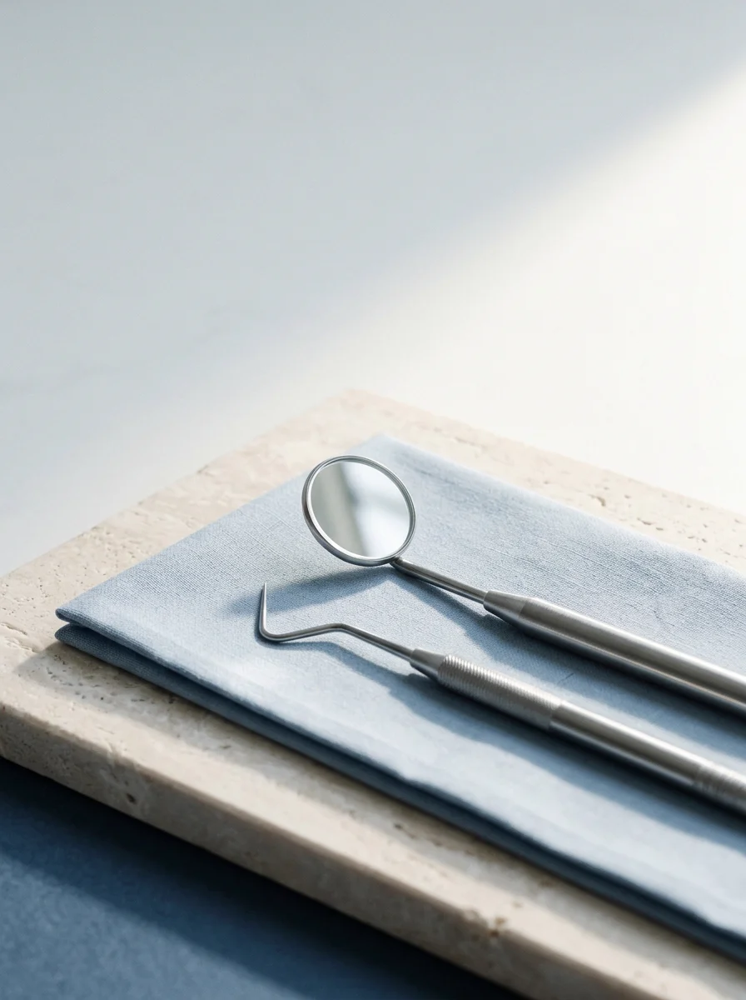
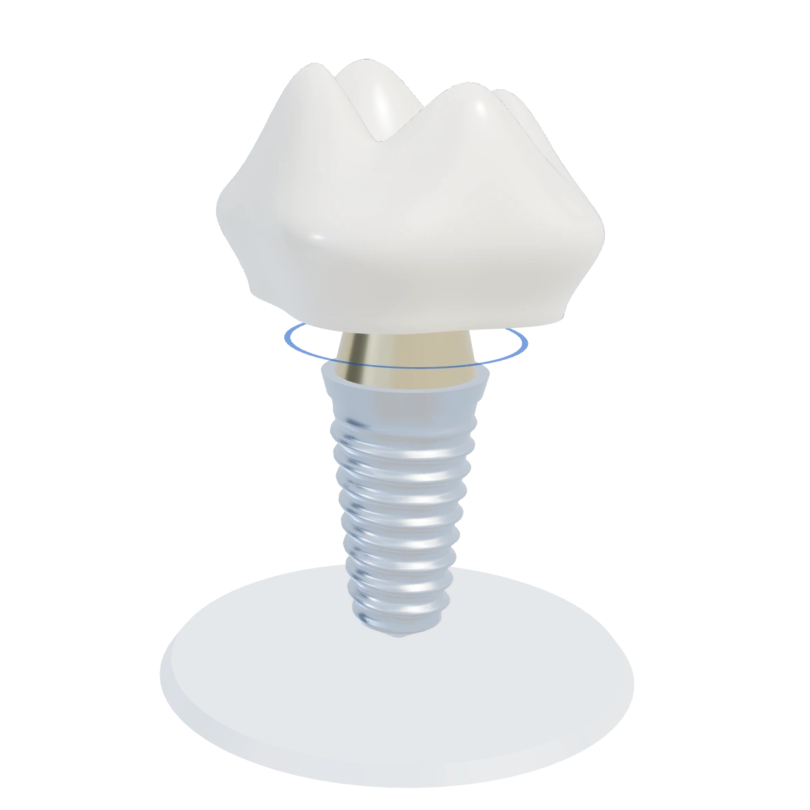
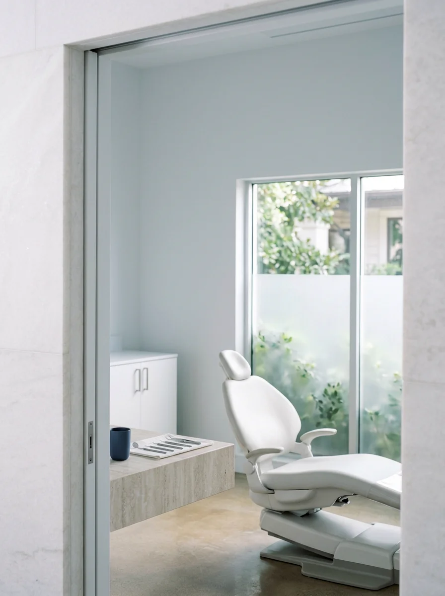
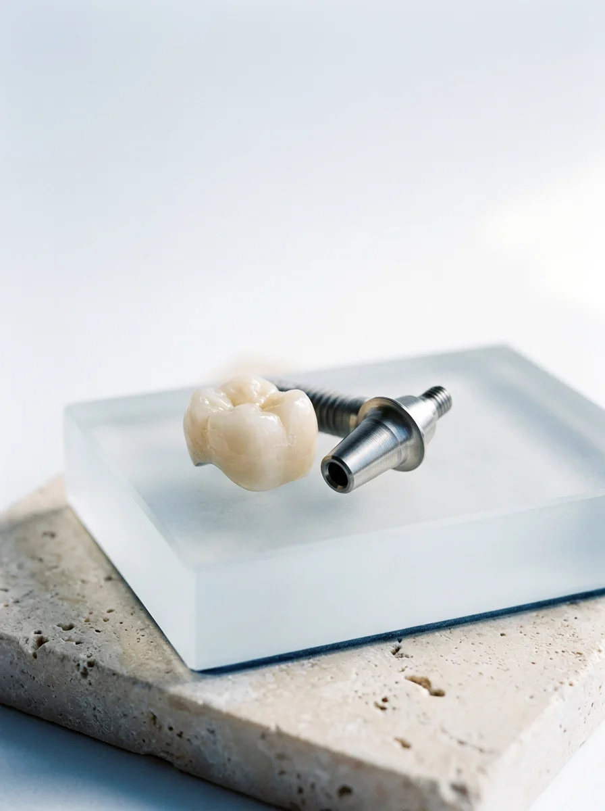
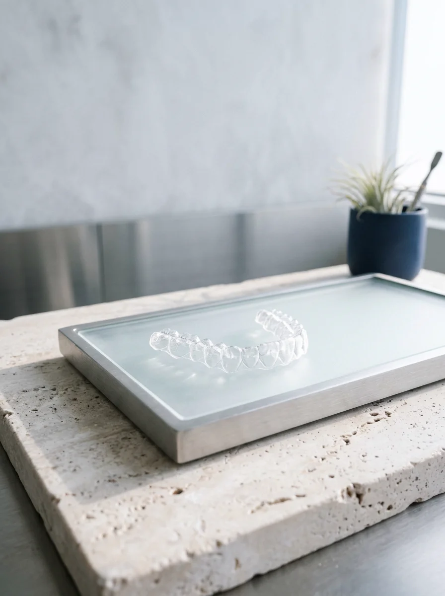
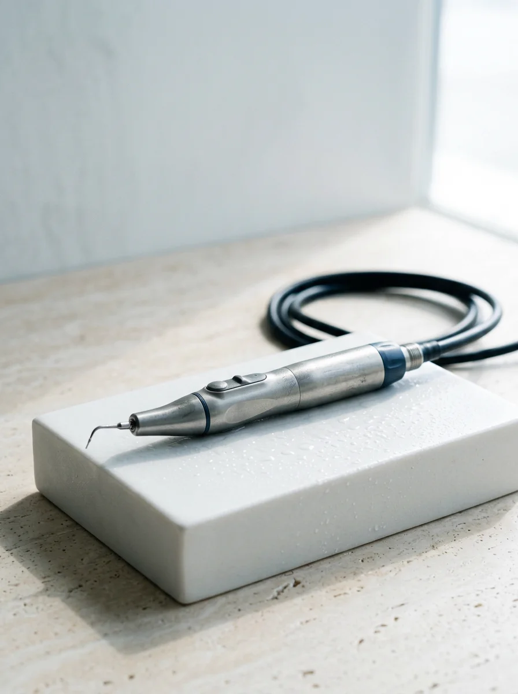

Urgences
Rage de dents, gencive enflée, dent cassée ou couronne descellée. Prise en charge rapide dès l'ouverture à 07h30.

Face au Grand Bazar, le Dr Kouakou Hilaire vous reçoit avec douceur pour vos urgences et vos soins dentaires.
Chaque soin commence par une explication simple.
Avant le moindre geste, vous voyez ce qui pose problème, comment nous allons le traiter sans douleur et quel sera le coût exact avec ou sans mutuelle.
Beaucoup de patients attendent que la douleur empêche de dormir avant d'appeler un dentiste. La peur d'avoir mal ou de tomber sur une dépense imprévue fait reculer la visite de mois en mois.
Au 2e étage de l'Immeuble Librairie de France, nous commençons toujours par vous écouter. L'anesthésie locale est posée doucement, en lui laissant le temps d'agir complètement avant de travailler. Chaque instrument suit un cycle strict de stérilisation entre deux patients.
Soins expliqués clairement
Pas de termes médicaux compliqués : nous vous montrons l'état de la dent et les solutions possibles.
Mutuelles partenaires
Prise en charge avec plusieurs organismes de santé et mutuelles en Côte d'Ivoire, dont la MUPEMENET-CI.

Faites défiler pour passer le scanner à travers la dent, ou sélectionnez ce qui vous amène pour préparer votre visite.
Lorsque l'émail est entamé, le froid ou le sucre réveille le nerf. Nous endormons d'abord la zone sans précipitation, retirons la partie abîmée et reconstruisons la dent avec une résine de la teinte naturelle de votre sourire.
Du simple nettoyage annuel au remplacement complet d'une dent, toute votre famille est suivie sur place à Bouaké.

Rage de dents, gencive enflée, dent cassée ou couronne descellée. Prise en charge rapide dès l'ouverture à 07h30.

Implants en titane, couronnes céramiques et prothèses fixes ou amovibles pour retrouver une mastication solide.

Alignement des dents chez l'enfant, l'adolescent et l'adulte pour un sourire équilibré et facile à brosser.

Détartrage doux aux ultrasons, soin des gencives qui saignent et visites de contrôle rassurantes pour les enfants.
Le cabinet est partenaire de réseaux de prévoyance et mutuelles comme la MUPEMENET-CI. Apportez votre carte d'assuré pour vérifier vos droits dès l'accueil.
Votre motif choisi plus haut est déjà inscrit. Complétez si besoin et envoyez directement votre demande sur le WhatsApp du cabinet.